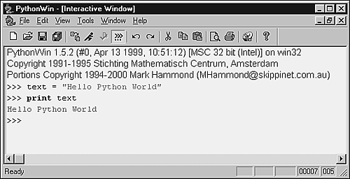
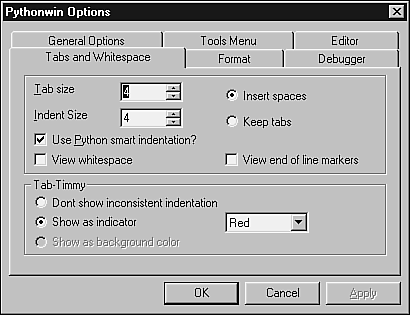
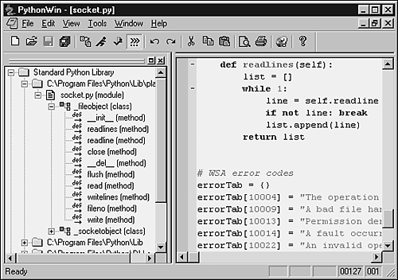
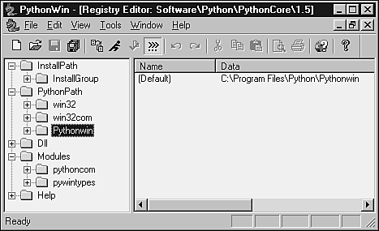
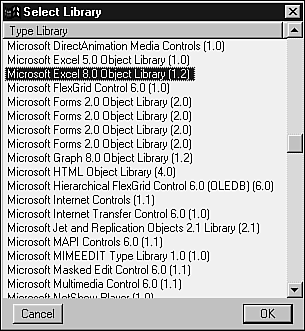
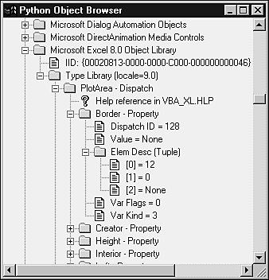
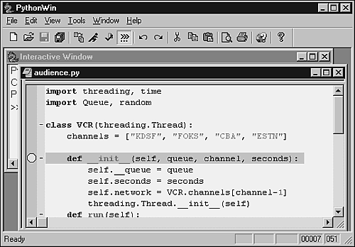
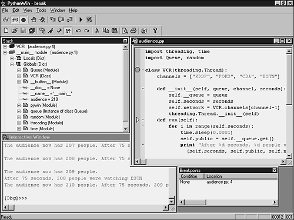

| < BACK | Make Note | Bookmark | CONTINUE > |
Pythonwin
Pythonwin is implemented as a wrapper for the Microsoft Foundation Class library. The interactive and interpreted environment is in fact just a fully functional program created by Mark Hammond to demonstrate the full power of the interface between MFC and Python. Besides the development environment, you can use Pythonwin to write your own application, based on a given set of MFC objects. As of now, Pythonwin supports more than 30 MFC objects that are exposed by the Windows environment, which includes Common Controls, Property Pages/Sheets, Toolbars, and so forth.
Pythonwin's latest version (at this moment) is the beta 3 of version 2. This beta comes as part of the most recent 1.5.2 build for Windows (win32all-132.exe). Note that this version might be different at the time of your reading.
This version provides a stabilization of many features, including the debugger and the general IDE interface, which had a great advance compared to the prior Pythonwin version. This version also includes a number of other enhancements and bug fixes, such as a number of changes/enhancements to Scintilla, COM fixes (mainly in obscure situations), and the new full support for COM User Defined Types (Records/Structs). Preliminary ADSI support has been added, as well.
Note
Scintilla is a free source code editing component, whose development started as an effort to improve Pythonwin.
In order to install Pythonwin, you can download the file from the following address:
http://starship.python.net/crew/mhammond/win32/Downloads.html
If you also want to have access to the top-level functions in both the PythonPath and Module browsers, you need to download the latest version of the module pyclbr.py. This module is a standard Python module that has been updated since Python 1.5.2. To download the module and for more information, check out the following:
http://starship.python.net/crew/mhammond/downloads/pyclbr.py
Mark Hammond's Python Extensions
http://starship.python.net/crew/mhammond/
Pythonwin Documentation Index
http://www.python.org/windows/pythonwin/
Python for Windows Repository
The Pythonwin Environment
Pythonwin simulates the built-in Python interpreter by using the Microsoft Foundation Classes to implement an Interactive Development Framework.
Tip
You can study Pythonwin's code by examining the files located in the directory \Pythonwin\pywin\framework of your local Pythonwin installation.
The shell provided by the Interactive Window implements many known features inherited from IDLE, such as the history mechanism. Depending on where you place the cursor when pressing ENTER, you can either execute a command located at the end of your screen buffer, or copy a block of code from somewhere else to the end of your buffer. Note that the end of the screen buffer is the place where you have an active primary prompt.
When the line that you are typing has to be continued in another line, the code doesn't get executed. At this time, Python starts a new line using the secondary prompt .... After you enter a complete Python statement, Pythonwin tries to execute it. If your execution generates an exception in a file, the file is displayed to you in a separate window, pointing to the line that has caused the exception. If a COM object generates the exception, and the exception contains a reference to a WinHelp file, the help topic is opened to you.
Pythonwin has available all the standard file operations that follow the MFC framework. If necessary, you can create Python programs to implement plug-in support for other file types that are not currently supported by Pythowin.
The Locate option defined in the menu is used to quickly locate a specific Python script. It searches for the file throughout all the directories listed in the sys.path variable. If you need to locate a module in a package, replace the dot between the package name and the module name with a backslash.
The Import option tries to import or reload a given script. Pythonwin is the one that decides if the script needs to be imported or reloaded. Pythonwin also handles modules that use the old and historic ni module. If you have a .py file opened, you can use this option to save and import the file. If a file cannot be located, a File dialog pops up asking you to locate the file.
The Run option runs a script, as if the file was passed on the command line. A dialog is opened, asking the script name and arguments. If you already have a script file open and just want to execute it, press CTRL+SHIFT+R.
This version of Pythfonwin is heavily similar to the latest version of IDLE (in new functionality). As Mark says, "Many of the new Pythonwin features below have come about simply by stealing code from IDLE." Pythonwin demonstrates its high integration with IDLE extensions by incorporating the ExpandWord extension module and IDLE's history capability.
Among other new features, the latest version of Pythonwin brings the following main changes:
-
Support for simple toggling and definition of fixed and propertional fonts.
-
Improved call tips and attribute expansion.
-
Key binding for toggling between the interactive window and the most recently used editor window.
-
Far improved find facility, including the ability to search across all open files.
Pythonwin provides an easily configurable color scheme because you can see the standard "Hello World" example shown in Figure 16.7. Note that example was written directly in the Interactive Window.
Figure 16.7. Interactive Window displaying Hello World.
The View/Options item in the Menu is useful to configure a lot of small details, such as the color scheme, and Tabs and Whitespace configuration (see Figure 16.8).
Figure 16.8. The Tabs and Whitespace configuration tab on the Pythonwin Option dialog box.
Under the Tools menu, you have several routines that provide some special functionality. The first one called Browser, displays information about an object whose name you have to type in a dialog box.
The Browse PythonPath option splits the screen into two parts: the Python Path browser and the Interactive Window file editor. When you click on a program or program item (class, function, and so on) in the Path Browser, the right panel opens the given file and places you on the part of the code that defines the object you have just clicked (see Figure 16.9). Note that the interface looks much nicer when you use the latest version of the pyclbr.py module.
Figure 16.9. Python Projects: tree widget that displays Python directories and files.
Another option provided is the ability to make changes on the Pythonwin Registry settings, as you can see in Figure 16.10. In order to open this window, you need to call the menu item named Edit PythonPath.
Figure 16.10. The Registry Editor allows you to make changes on the registry settings of Pythonwin.
The next two options are used when you have to write COM interfaces using Python. The first option COM Makepy utility is mentioned in Chapter 7, "Objects Interfacing and Distribution." It lists all the available COM objects registered in the system and allows you to create a Python interface for them (see Figure 16.11). In this example, we are highlighting the Excel 8.0 Object Library in order to create a Python interface that will allow us to use Excel COM interface.
Figure 16.11. A list of available COM libraries.
This next option COM Browser allows you to visualize all the properties of registered COM objects (see Figure 16.12).
Figure 16.12. The Python Object Browser.
Pythonwin supports source code folding, which means that it has the capability to collapse sections of source code into single lines, and later expand them back to the original structure (see Figure 16.13). This folding featured was added to Pythonwin thanks to Scintilla. You can fold and unfold any Python statement that introduces a new block either by clicking on the indicator in the folding margin, by selecting one of the folding keystrokes, or by using View, Folding menu. Note that the folding feature must be enabled via the menu option View/Options/Editor dialog. You can also change the configuration so that all files have only their top-levels folded when opened. All editing functions work properly when code is folded. If necessary, functions like find, replace, and goto are able to unfold the code before they start performing their tasks. For more information, check out
Figure 16.13. Opening a file and toggling the breakpoint.

Scintilla
Pythonwin's debugger had a great improvement since the last version. To use the Debug mechanism, you need to open a program and set the breakpoints on the code. You can toggle the breakpoints by clicking on a specific line and using the F9 key binding, as shown in Figure 16.13. You don't need to run the debugger just to set the breakpoints; you can do that while the debugger is not running. While the debugger is inactive, the breakpoints are shown without any coloring.
You just can't let the breakpoints remain there and pray for something to happen. You need to activate the debugger by either using the Step in (F11) option, the Go (F5) option, or one of the shortcuts in the toolbar and in the menu. When you start the debugging process, all breakpoints become red (see Figure 16.14—note that as the figure isn't in color, it might feel that some colors are not easily identified in the book).
Figure 16.14. The Debug Framework.
In order to add watch variables and break-point conditions, you need to click on a specific part of the Debugging window. To add variables, you need to click on the Expression/Value text box and click on the <New item> text. The prompt will let you type the name of the variables that you want to watch. In case you want to delete something from there, you just need to press the Delete key.
If you close the Debugging toolbar, you can open it using the menu option View, Toolbars, Debugging. Note that this toolbar follows the standard found in other languages, as we can see in the Figure 16.14 (from left to right):
-
Watch Window toggle option
-
Stack Viewer Window toggle option
-
Breakpoint List Window toggle option
-
Option to toggle a breakpoint
-
Option to clear all breakpoints
-
Step into a statement
-
Step over a function
-
Step out of a structure
-
Go
-
Close the debugger
As you can see in Figure 16.14, when you select all debug windows to be open, you get a Debug Framework containing five windows. Let's go clockwise, starting from the top-left corner: We have the variable watch window, the stack viewer, the Python path browser, the interactive window that displays the source code, and a list of breakpoint conditions (on the bottom).
Keyboard Bindings
Pythonwin has a customizable keyboard binding mechanism that allows you to define your own custom events and keyboard bindings. All this information gets stored in a file called default.cfg, which is located in the pywin directory. You can freely edit this file if you want. All the documentation necessary to create the new bindings is kept in this file, including how to create your own configuration based on the default file. This last feature is a handful to incorporate into your system default file from new versions of Pythonwin without changing your code. This directory also contains a configuration file called IDLE.cfg that simulates the keyboard bindings of IDLE, providing a good customization example.
The bindings in Table 16.3 are part of Pythonwin's default configuration.
Command Line Arguments
Pythonwin accepts the following command line arguments. In case you need to make changes in any one of these commands, you just need to modify the intpyapp.py file.
/run scriptname arguments
This command runs the given script in the GUI environment and sends the output directly to Pythonwin's interactive window.
/runargs scriptname arguments
This command also runs the given script in the GUI enviroment. The difference between this and the previous command is that this one shows Pythonwin's "Run Script" dialog.
/edit filename
This command allows you to edit the given file. Currently, you can omit the /edit command because it is not strictly enforced.
/app scriptname arguments
This command runs an application script that is able to change the appearance of a Pythonwin program. For details, check the examples located in the Pythonwin application folder (/Pythonwin/pywin/Demos/app) of your Python installation.
| Last updated on 1/30/2002 Python Developer's Handbook, © 2002 Sams Publishing |
| < BACK | Make Note | Bookmark | CONTINUE > |